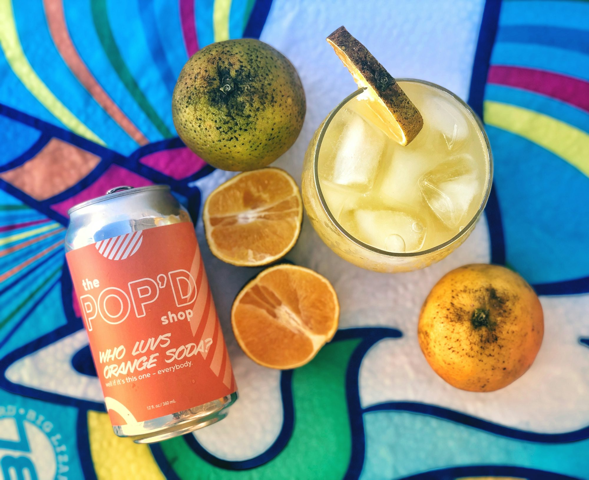
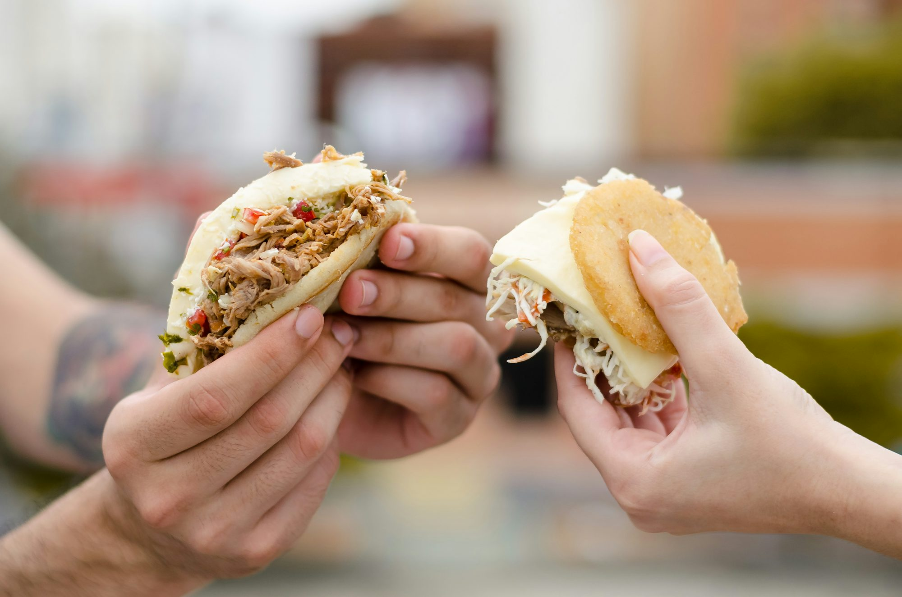
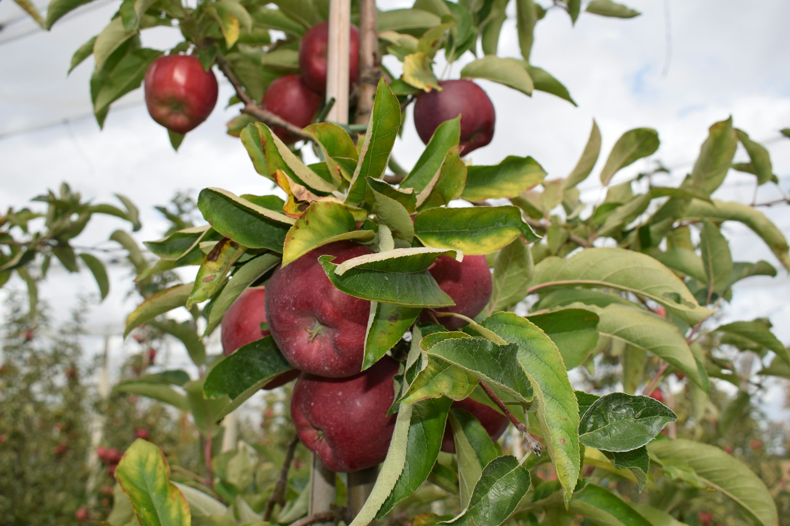
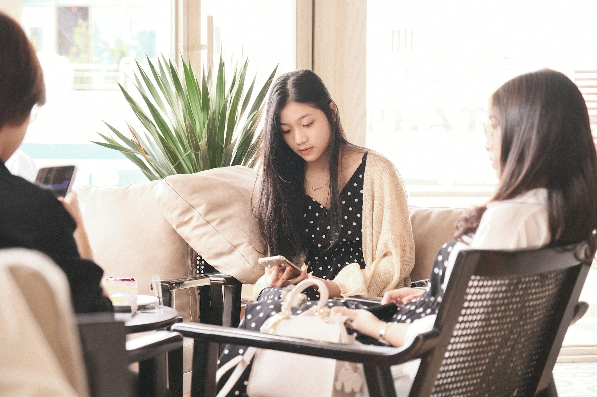
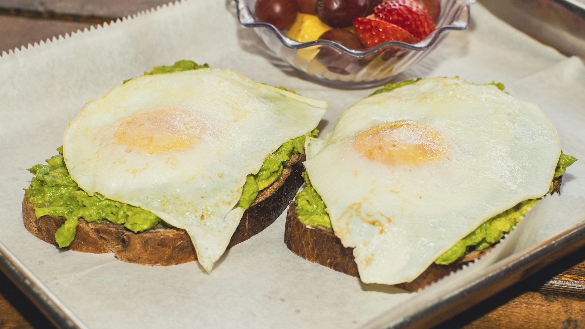
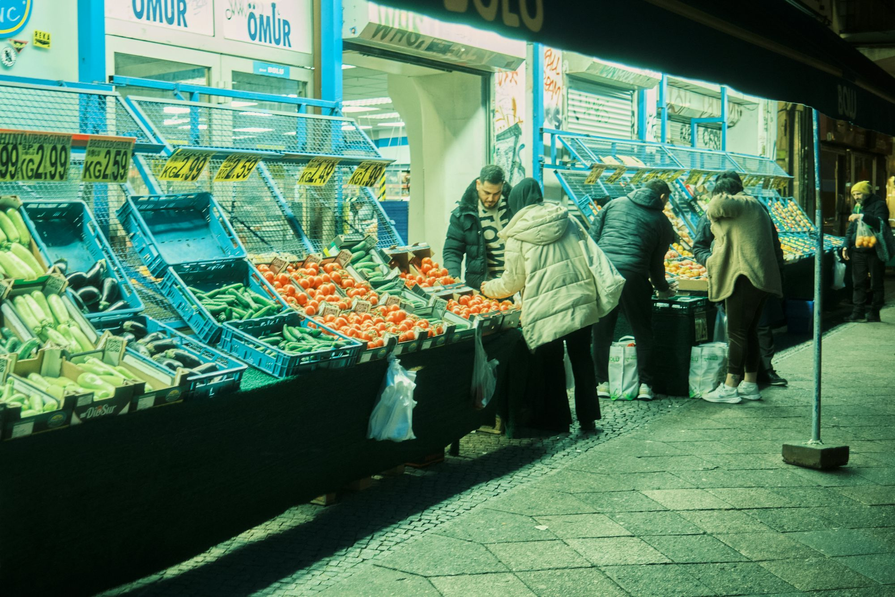

Exploring the World of Artisan Cheese: A Journey of Flavor and Tradition
This article delves into the fascinating realm of artisan cheese, exploring its history, production methods, and the diverse flavors that make it a beloved culinary staple.Imagery array




Your Feedback
Article collection

Exploring the Global Cuisine: A Culinary Journey
This article takes readers on a flavorful journey through various global cuisines, highlighting unique ingredients, cooking techniques, and cultural significance, while encouraging culinary exploration.
Liam Thompson
Saturday, June 21st 2025
Sophia Mitchell
Burgers Beyond Borders: A Journey Through International Flavors
Explore the diverse world of burgers influenced by global cuisines, showcasing unique ingredients and flavors from various cultures.

Exploring the World of Exotic Spices: A Flavorful Adventure
This article takes you on a journey through the vibrant world of exotic spices, their origins, uses in cooking, and the unique flavors they bring to global cuisines.
Saturday, October 25th 2025
Cafés as Cultural Spaces: More Than Just Coffee
This article examines how cafés have evolved into cultural hubs, highlighting their role in fostering community, creativity, and social engagement.
Maya Thompson
Sunday, November 23rd 2025
Café Journeys: Exploring Unique Themes and Culinary Experiences
Embark on a journey through the diverse world of cafés, each offering unique themes and culinary delights that reflect cultural richness and creativity.
Elena Rossi
Decadent Delights: A Sweet Journey Through Global Desserts
Explore the fascinating world of desserts from around the globe, showcasing their unique ingredients, cultural significance, and the joy they bring to our lives.
Lucas Green
Burgers Around the World: A Global Culinary Adventure
This article explores the diverse and unique burger styles from various cultures, showcasing how local ingredients and traditions shape this beloved dish.
Lucas Thompson